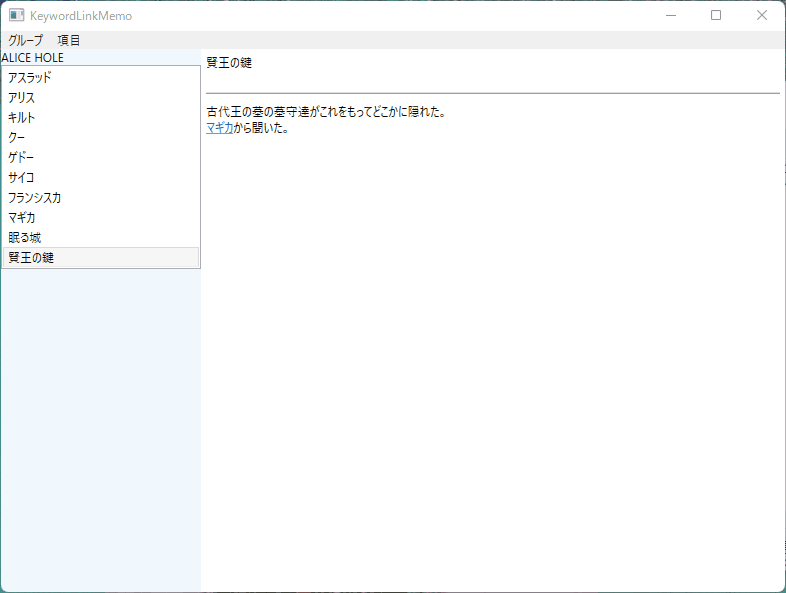

自動キーワードリンク機能付きのメモアプリを作った
類似アプリが（たぶん）なかったので自作。
リポジトリはここ。
言語はC#、GUIフレームワークはWPF。C#を触るのは1年以上ぶり。
目指したのはニコニコ大百科やはてなキーワードなどのデスクトップアプリ版といった感じ。
以下のGIFは本アプリの動作デモ。デザインがクソダサなのには目をつむってほしい。

想定される使用用途は、登場人物がやたら多い小説やネフェイスト系の探索RPGなどの情報整理。ていうかそういうアプリが欲しいから作った。
先述のニコニコ大百科などでは、キーワードの抽出にはtrie木とその応用であるAho Corasick法というアルゴリズムを用いるらしい。よくわからないのでここらへんはライブラリに頼った。
ひとつ注意すべき点があり、現状ではテキストの前方から貪欲にキーワードを抽出するという仕組みになっている。
例えばこのページの例で言えば、抽出されるのは「いう」と「かきく」であり、「きくけこさし」と「いう」ではない。
どうやら動的計画法によって最長キーワード優先一致にできるようなので、気が向いたら改善に挑戦してみる。え、おれがDP？……まあなんとかならなくないことはないかもしれない。